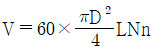
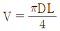
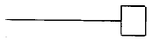
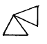
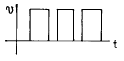
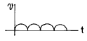
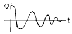
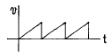
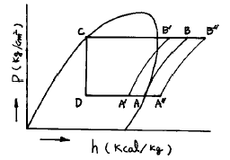

공조냉동기계기능사 (2001-07-22 기출문제)
1과목: 공조냉동안전관리
1. 보일러에서 과열되는 원인은?
- 보일러 동체의 부식
- 안전밸브의 기능불량
- 압력계를 주의깊게 관찰하지 않았을 때
- 수관내의 청소불량
(정답률: 57%)

2. 전기화재의 소화에 사용하기에 부적당한 것은?
- 분말 소화기
- 포말 소화기
- CO2 소화기
- 유기성 소화액
(정답률: 48%)
3. 산소가 결핍되어 있는 장소에서 사용되는 마스크는?
- 송풍 마스크
- 방진 마스크
- 방독 마스크
- 특급 방진 마스크
(정답률: 93%)
4. 드라이버 끝이 나사홈에 맞지 않으면 뜻밖의 상처를 입을 수가 있다. 드라이버 선정시 주의사항이 아닌 것은?
- 날끝이 홈의 폭과 길이에 맞는 것을 사용한다.
- 날끝이 수직이어야 하며 둥근 것을 사용한다.
- 작은 공작물이라도 한 손으로 잡지 않고 바이스 등으로 고정시킨다.
- 전기 작업시 자루는 절연된 것을 사용한다.
(정답률: 75%)
5. 줄작업시 설명으로 적당하지 않는 것은?
- 새줄인 경우에는 연질의 재료부터 작업을 한다.
- 줄을 밀 때 안전을 위하여 상체를 고정시키고 손목과 팔을 이용한다.
- 줄눈에 쇳밥이 박히는 것을 방지하기 위해 분필을 사용한다.
- 왼손을 줄끝에 대고 줄의 균형을 유지한다.
(정답률: 43%)
6. 냉동장치를 능률적으로 운전하기 위한 대책이 아닌 것은?
- 이상고압이 되지 않도록 주의한다.
- 냉매부족이 없도록 한다.
- 습압축이 되도록 한다.
- 각부의 가스 누설이 없도록 유의한다.
(정답률: 96%)
7. 감전사고의 방지대책 중 잘못된 것은?
- 안전 절연 보호장구 사용
- 허가자 외 접근금지
- 작업자에 대한 안전교육 철저
- 전기 기기에 위험표지를 하며 기기에 바짝 접근하여 작업한다.
(정답률: 90%)
8. 안전모의 취급 안전관리 사항 중 적합하지 않는 것은?
- 산이나 알카리를 취급하는 곳에서는 펠트나 파이버모자를 사용해야 한다.
- 화기를 취급하는 곳에서는 몸체와 차양이 셀룰 로이드로 된 것을 사용하여서는 안된다.
- 월 1회 정도로 세척한다.
- 안전모를 쓸 때 모자와 머리끝 부분과의 간격은 25mm이하되도록 헤모크를 조정한다.
(정답률: 35%)
9. 안전표지를 부착하는 이유는?
- 능률적인 작업을 유도하기 위하여
- 인간심리의 활성화 촉진
- 인간행동의 변화 통제
- 환경정비 목적
(정답률: 57%)
10. 밀폐된 곳에서 전기용접 작업시 주의할 사항 중 틀린 것은?
- 용접작업 완료후 냉각될 때 까지 확실한 표식을 해 둘 필요는 없다.
- 통풍장치를 한다.
- 외부에서 공기공급이 가능한 마스크를 사용한다.
- 보안경을 착용한다.
(정답률: 83%)
11. 보일러의 안전수위에 대한 설명 중 올바른 것은?
- 사용중 유지해야 할 최고 수면
- 사용중 유지해야 할 최저 수면
- 사용중 유지해야할 중간 수면
- 최고 부하시 유지해야 할 적정 수위
(정답률: 60%)
12. 연소의 3요소에 속하지 않는 것은?
- 가연물
- 산소
- 점화물
- 상대습도
(정답률: 87%)
13. 독성가스를 식별조치할 때 표지판의 가스 명칭은 무슨색으로 하는가?
- 흰색
- 노란색
- 적색
- 흑색
(정답률: 44%)
14. 가스용접시 사용하는 아세틸렌 호스의 색깔은?
- 흑색
- 적색
- 녹색
- 백색
(정답률: 64%)
15. 프레온 냉동장치에서 건조기(dryer)의 설치 위치는?
- 수액기와 팽창밸브 사이
- 팽창밸브와 증발기 사이
- 증발기와 압축기 사이
- 압축기와 응축기 사이
(정답률: 36%)
2과목: 냉동기계
16. 프레온 냉동장치에 대해 다음 설명 중 옳은 것은?
- 냉매가 누설하는 부위에 헬라이드등을 가깝게 대면 불꽃은 흑색으로 변한다.
- -50℃ ∼ -70℃의 저온용 배관재료로서 이음매 없는 동관을 사용한다.
- 브라인 중에 냉매가 누설하였을 경우의 시험 약품으로서 네슬러시약 용액을 사용한다.
- 포밍을 방지하기 위해 압축기에 오일 필터를 사용한다.
(정답률: 30%)
17. 불연성이며 폭발성이 없고 수분을 함유하면 부식을 일으키고, 유(oil)와 잘 혼합하지 않으며, 재료는 동 및 동 합금을 사용할 수 있고 체적은 암모니아의 약 1.5배이며, NH3와 열역학 성질이 흡사한 냉매는?
- R – 22
- CO2
- SO2
- 메칠크로라이드
(정답률: 37%)
18. 어떤 냉동 사이클에 있어서 증발온도가 -15℃일 때 포화액의 엔탈피를 100㎉/㎏, 건조포화 증기의 엔탈피를 150㎉/㎏, 증발기에 유입되는 습증기의 건조도 X=0.25 라면, 이 냉동 사이클의 냉동 능력은?
- 12.5 ㎉/㎏
- 25.5 ㎉/㎏
- 37.5 ㎉/㎏
- 50.5 ㎉/㎏
(정답률: 53%)
19. 회전식 압축기의 피스톤 압출량 V를 구하는 공식은 어느 것인가? (단, D=직경〔m〕, d=회전 피스톤의 외경〔m〕, t=기통의 두께〔m〕, N=회전수〔rpm〕, n=기통수)
- V = 60 ×0.785 × (D2-d2)tN
- V = 60 ×0.785 × D2LNn


(정답률: 38%)
20. 실린더 내경 20㎝, 피스톤 행정 20㎝, 기통수 2개, 회전수 300 rpm 인 냉동기의 피스톤 압출량은?
- 182.1 m3/h
- 201.4 m3/h
- 226.1 m3/h
- 262.7 m3/h
(정답률: 52%)
21. 냉동장치의 오일 안전 밸브에 관한 사항 중 옳은 것은?
- 오일펌프의 안전장치로서 과열을 방지한다.
- 프레온 냉동장치에만 설치한다.
- 유압이 낮아지는 것을 방지하여 압축기를 보호 한다.
- 유압이 이상 고압일때 작용하여 오일의 압력을 조절한다.
(정답률: 44%)
22. 냉동장치의 고압측에 안전장치로 사용되는 것 중 부적당한 것은?
- 스프링식 안전밸브
- 플로우트 스위치
- 고압차단 스위치
- 가용전
(정답률: 52%)
23. 증발기에서 나오는 저온의 냉매 증기와 수액기 또는 응축기에서 팽창변에 이르는 고온의 냉매액과의 사이에 열교환을 시키는 것 중 틀리는 것은?
- 압축기로 흡입되는 액냉매를 방지하기 위함이다.
- 고압응축액을 냉각시켜 냉동능력을 증대시킨다.
- 흡입가스를 가열시켜 성적계수를 높인다.
- 냉매액을 냉각하여 그 중에 포함되어 있는 수분을 동결시킨다.
(정답률: 55%)
24. 가용전(fusible plug)에 대한 설명으로 틀린 것은?
- 프레온 장치의 수액기, 응축기 등에 사용한다.
- 용융점은 냉동기에서 75℃이하로 한다.
- 구성 성분은 주석, 구리, 납으로 되어 있다.
- 토출가스의 영향을 직접 받지 않는 곳에 설치 해야한다.
(정답률: 60%)
25. 암모니아 냉동기의 압축기에 공냉식을 채택하지 않는 이유는?
- 토출가스의 온도가 높기 때문에
- 압축비가 작기 때문에
- 냉동능력이 크기 때문에
- 독성가스이기 때문에
(정답률: 48%)
26. NH3 냉매를 사용하는 냉동장치에서는 열교환기를 설치하지 않는다. 그 이유는?
- 응축 압력이 낮기 때문에
- 증발 압력이 낮기 때문에
- 비열비 값이 크기 때문에
- 임계점이 높기 때문에
(정답률: 63%)
27. 액펌프 냉각 방식의 이점으로 옳은 것은?
- 리퀴드 백(liquid back)을 방지할 수 있다.
- 자동제상이 용이하지 않다.
- 증발기의 열통과율은 타증발기보다 양호하지 못하다.
- 펌프의 캐비테이션 현상 방지를 위해 낙차를 크게하고 있다.
(정답률: 64%)
28. 암모니아와 후레온 냉동장치를 비교하여 다음 중 옳은 것은?
- 압축기의 실린더의 과열은 후레온 보다 암모니아가 심하다.
- 냉동장치내에 수분이 있을 경우 후레온 보다 암모니아가 문제성이 심하다.
- 냉동장치내에 윤활유가 많은 경우 후레온 보다 암모니아가 문제성이 적다.
- 암모니아 보다 후레온이 독성이 크다.
(정답률: 46%)
29. 흡수식 냉동기의 주요 부품이 아닌 것은?
- 응축기
- 증발기
- 발생기
- 압축기
(정답률: 48%)
30. 고압측 액관에 설치한 여과기의 메쉬(Mesh)는 어느 정도인가?
- 40-60 mesh
- 80-100 mesh
- 120-140 mesh
- 160-180 mesh
(정답률: 64%)
31. 로터리 벤더에 의한 강관 구부리기에서 관이 타원형으로 될 때 원인이 아닌 것은?
- 받침쇠가 너무 들어가 있다.
- 받침쇠와 안지름의 간격이 작다.
- 받침쇠의 모양이 나쁘다.
- 재질이 부드럽고 두께가 얇다.
(정답률: 26%)
32. 다음 그림 기호가 나타내는 관의 끝부분 표시방법은?

- 막힌 플랜지
- 용접식 캡
- 체크 포인트
- 나사 박음식 캡
(정답률: 26%)
33. 다음의 기호는 어떤 밸브인가?

- 볼 밸브
- 글로우 밸브
- 수동 밸브
- 앵글 밸브
(정답률: 70%)
34. 배관용 탄소강관의 기호로 맞는 것은?
- SPP
- SPPS
- SPPH
- SPHT
(정답률: 37%)
35. 파이프 호칭법에서 SPPS 38로 표시될 때 아래 설명중 맞는 것은?
- 호칭 지름 38mm인 배관용 강관
- 최저 인장강도 38kg/mm2인 배관용 강관
- 최저 인장강도 38kg/mm2인 압력 배관용 탄소강관
- 호칭 지름 38mm인 압력 배관용 강관
(정답률: 50%)
36. 오옴의 법칙에 대한 설명 중 옳은 것은?
- 전류는 전압에 비례한다.
- 전류는 저항에 비례한다.
- 전류는 전압의 2승에 비례한다.
- 전류는 저항의 2승에 비례한다.
(정답률: 72%)
37. 교류회로의 3정수가 아닌 것은?
- 저항
- 인덕턴스
- 캐패시턴스
- 콘덕턴스
(정답률: 20%)
38. 다음 파형 중 펄스파를 나타내는 것은?




(정답률: 22%)
39. 1[PSI]는 몇 [g/㎝2]인가?
- 64.5g/㎝2
- 70.3g/㎝2
- 82.5g/㎝2
- 98.1g/㎝2
(정답률: 35%)
40. 열전도저항에 대한 설명 중 맞는 것은?
- 길이에 반비례한다.
- 전도율에 비례한다.
- 전도면적에 반비례한다.
- 온도차에 비례한다.
(정답률: 42%)
41. 냉매의 일반적인 성질로서 맞는 것은?
- 흡입압력이 저하되면 토출가스 온도가 저하된다.
- 냉각수온이 높으면 응축압력이 저하된다.
- 냉매가 부족하면 증발압력이 상승한다.
- 응축압력이 상승되면 소요동력이 증가한다.
(정답률: 45%)
42. 공정점이 -55℃이고 저온용 브라인으로서 일반적으로 가장 많이 사용되고 있는 것은?
- 염화칼슘
- 염화나트륨
- 염화마그네슘
- 프로필렌글리콜
(정답률: 73%)
43. 증발온도와 응축온도가 일정하고 과냉각도가 없는 냉동사이클에서 압축기에 흡입되는 상태가 변화했을 때의 P-h선도 중 건조포화압축 냉동사이클은?

- A-B-C-D
- A'-B'-C-D
- A"-B"-C-D
- A'-B'-B"-A"
(정답률: 45%)
44. 임계점에 대한 설명 중 가장 적당한 것은?
- 모리엘 선도 중에서 과열증기가 발생하는 그 순간의 점
- 액체와 증기가 서로 평형상태로 존재할 수 있는 상태
- 그 이상의 체적에서 액체와 증기가 서로 평형으로 존재할 수 없는 상태
- 그 이상의 온도에서 액체와 증기가 서로 평형으로 존재할 수 없는 상태
(정답률: 35%)
45. 입형 암모니아 압축기의 설명 중 옳지 않는 것은?
- 탑 클리어런스가 1mm 정도이고 체적 효율이 좋다.
- 실린더를 일반적으로 물로 가열시켜 주기 위한 워터자켓을 설치한다.
- 피스톤이 길어지게 되면 더블 드링크 타이프를 채용한다.
- 회전수는 일반적으로 250∼400rpm이다.
(정답률: 49%)
3과목: 공기조화
46. 공기조화에서“ET”는 무엇을 의미하는가?
- 인체가 느끼는 쾌적온도의 지표
- 유효습도
- 적정 공기 속도
- 적정 냉난방 부하
(정답률: 48%)
47. 난방부하 3600㎉/h인 실에 온수를 열매로 하는 방열기를 설치하는 경우 소요방열 면적은 몇 m2인가? (단, 표준상태로 가정)
- 2.0
- 4.0
- 6.0
- 8.0
(정답률: 41%)
48. 다음의 공기조화 방식 중에서 개별방식이 아닌 것은?
- 룸 쿨러
- 멀티 유닛형 룸 쿨러
- 패키지 방식
- 팬 코일 유닛방식
(정답률: 42%)
49. 2중 덕트 방식에 대한 설명 중 잘못된 것은?
- 개별 조절이 가능하다.
- 습도의 완전한 조절이 가능하다.
- 동시에 냉방, 난방을 행하기가 용이하다.
- 설비비, 운전비가 많이 든다.
(정답률: 44%)
50. 다음의 냉수코일에 대한 설명 중에서 옳지 않은 것은?
- 물의 속도는 일반적으로 1 m/s 전후이다.
- 코일을 통과하는 공기의 풍속은 7∼8 m/s 정도이다.
- 입구수온과 출구수온의 차이는 일반적으로 5℃ 전후이다.
- 코일의 설치는 관이 수평으로 놓이게 한다.
(정답률: 24%)
51. 공조기에 사용되는 에어 필터의 여과효율을 검사 하는데 사용되는 방법과 거리가 먼 것은?
- 중량법
- Dop법
- 변색도법
- 체적법
(정답률: 37%)
52. 공기조화에서 덕트의 설계시 고려하지 않아도 되는 것은?
- 덕트로 부터의 소음
- 덕트로 부터의 열손실
- 공기 흐름에 따른 마찰저항
- 덕트 내를 흐르는 공기의 엔탈피
(정답률: 50%)
53. 다음의 온수 난방에 대한 설명으로 잘못된 것은?
- 예열부하가 증기난방에 비해 작다.
- 한냉지에서는 동결의 위험성이 있다.
- 증기 난방보다 방열면적이 커지고 설비비가 증가한다.
- 난방부하에 따라 온도조절이 용이하다.
(정답률: 46%)
54. 증기압력에 따라 분류한 증기난방 방식에 속하는 것은?
- 고압식
- 중력식
- 진공식
- 습식
(정답률: 45%)
55. 습도 표시방법 중 건공기 1kg을 함유하고 있는 습공기 속의 수증기 중량을 무엇이라고 하는가?
- 상대습도
- 비교습도
- 절대습도
- 수증기습도
(정답률: 29%)
56. 공기 중의 수증기가 응축하기 시작하는 온도는?
- 건구온도
- 노점온도
- 습구온도
- 감각온도
(정답률: 47%)
57. 열의 이동 3가지 기본 형식이 아닌 것은?
- 전도
- 관류
- 대류
- 복사
(정답률: 57%)
58. 사각형 닥트의 장변길이가 120cm 일 때 아연도 강판의 두께는 몇 mm인가?
- 0.5
- 0.6
- 0.8
- 1.0
(정답률: 28%)
59. 공기조화 설비의 구성요소가 아닌 것은?
- 공기조화기
- 연료가열기
- 열원장치
- 자동제어장치
(정답률: 48%)
60. 수량 2 000ℓ/min, 양정 50 m, 펌프효율 65 %인 펌프의 소요 축동력은 몇 kW인가?
- 23 kW
- 24 kW
- 25 kW
- 26 kW
(정답률: 22%)